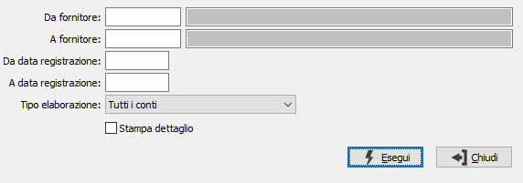

Controllo partite/scadenze fornitori
Il programma provvede a controllare la coerenza tra i saldi delle partite aperte ed i saldi contabili.

DA FORNITORE: indicare il codice del fornitore da cui si intende iniziare il controllo; confermando a vuoto il controllo inizia dal primo codice valido. Sul campo sono attive le funzioni di ricerca (F9).
A FORNITORE: indicare il codice del fornitore con cui si intende far terminare il controllo; se si conferma a vuoto il controllo termina con l'ultimo codice valido. Sul campo sono attive le funzioni di ricerca (F9).
DA DATA: eventuale data di registrazione contabile da cui deve iniziare il controllo, relativamente ai fornitori indicati. Confermando a vuoto, il controllo inizia dal primo movimento contabile valido.
A DATA: eventuale data di registrazione contabile a cui deve terminare il controllo, relativamente ai fornitori indicati. Confermando a vuoto, il controllo termina con l’ultimo movimento contabile valido.
TIPO ELABORAZIONE: indica quali conti riportare nella stampa di controllo; i valori possibili sono:
tutti i conti
solo i movimentati
solo i non coerenti
STAMPA DETTAGLIO: la spunta di questa casella determina la stampa, per ogni conto riportato nella stampa, del dettaglio delle registrazioni relative alle scadenze.